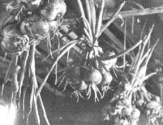

COUNTERCLOCKWISE. [1]Lay out first strip of poly. A stone at each corner will hold it in place until you can push in one edge with a spade. [2] Then push opposite edge in. Don't worry about wrinkles. [3] Lay a second strip beside the first (the plastic in these pictures has been used several times). [4] Anchor second sheet with spade.